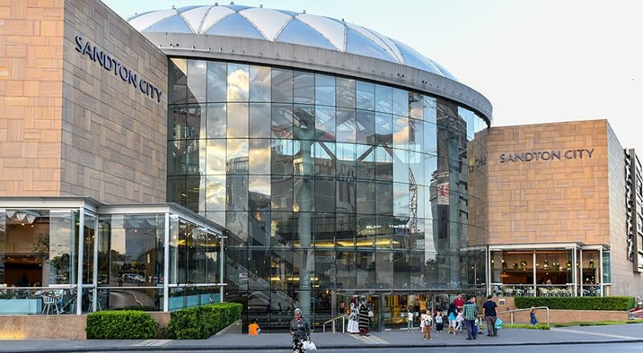
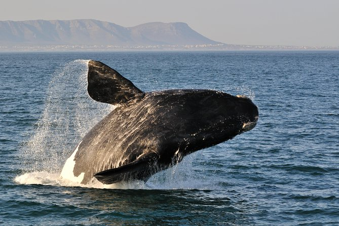
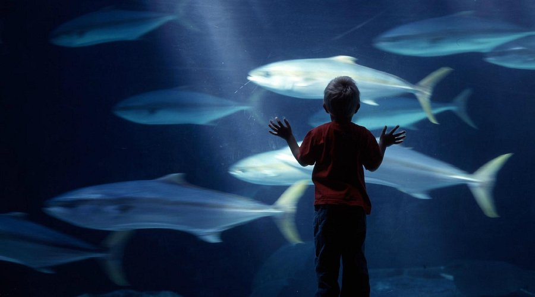

O Pilanesberg é uma das experiências de safari mais acessíveis e impressionantes da África do Sul. O parque ocupa a cratera de um vulcão extinto e abriga os Big Five em liberdade total: leão, leopardo, elefante, rinoceronte e búfalo africano. O inverno seco de julho é o momento ideal — vegetação rasteira, animais concentrados nos pontos de água e céus absolutamente limpos para os amanheceres mais bonitos da viagem.
Dia longo de viagem — noite de avião, conexão em Guarulhos e pouso em Joanesburgo às 07h05. Depois de imigração e retirada de bagagens, o guia da Agência África para Brasileiros estará esperando para o transfer privativo até o Pilanesberg — com uma parada especial no Santuário dos Elefantes pelo caminho. Chegada ao KWA Maritane por volta das 13h-14h. Almoço no lodge, descanso e, se a energia permitir, primeiro game drive da tarde às 16h. Noite encerrada com jantar incluso e céu estrelado da savana.
O aeroporto O.R. Tambo é o maior da África e muito bem sinalizado. Após o desembarque, sigam as placas de Immigration — brasileiros entram na fila de passaportes não-sul-africanos. O processo costuma ser rápido e tranquilo. Pode acontecer de perguntarem quantos dias vão ficar e o endereço do primeiro hotel — tenham essa informação acessível. Após carimbar o passaporte, retirem as bagagens e saiam pelo corredor de Nothing to Declare.
São aproximadamente 2h30 de estrada saindo de Joanesburgo em direção ao noroeste, até a entrada do Pilanesberg National Park — com uma parada especial no caminho. A paisagem vai mudando ao longo do trajeto: de metrópole para planície, até as primeiras montanhas arredondadas que marcam a cratera do vulcão extinto onde fica o parque. O guia faz a companhia toda em português, explicando o que vão ver ao longo do caminho. O Luigi provavelmente vai querer colocar o nariz para fora da janela quando a savana aparecer.
No caminho para o Pilanesberg, o transfer inclui uma parada em um santuário de elefantes — um centro de reabilitação e preservação onde é possível ver os elefantes de perto em ambiente seguro e ético. É uma das primeiras e mais marcantes experiências da viagem, especialmente para o Luigi, que ainda não vai ter visto nada parecido. O guia explica o contexto de conservação dos animais durante a visita. Uma introdução suave e emocionante ao continente africano antes mesmo de chegar ao safari.
 KWA Maritane Bush Lodge
KWA Maritane Bush Lodge
O KWA Maritane é um lodge de luxo integrado à natureza, dentro dos limites do parque — o que significa que os animais circulam livremente ao redor das acomodações. As cabanas são espaçosas e têm varanda privativa com vista para a savana. A estrutura inclui piscina aquecida, mirantes e o famoso túnel subterrâneo de observação: um corredor escavado que termina num painel de vidro no nível do chão, com vista direta para o bebedouro do lodge — elefantes, rinocerontes e girafas chegam a metros de vocês, no nível dos cascos. Uma das experiências mais íntimas com a vida selvagem que existe.
📍 KWA Maritane Bush Lodge · Pilanesberg National Park
Culinária: sul-africana e internacional · ambiente integrado à natureza · vista para a savana
💰 ~ZAR 900 para a família · almoço não incluso na diária
✅ Sem reserva — hóspedes têm prioridade
O game drive da tarde sai quando o calor do dia já cedeu e os animais voltam a se movimentar. O guia especializado conhece os pontos de água e as áreas de maior atividade do parque — é ele quem decide a rota em tempo real, seguindo rastros e avistamentos reportados por outros veículos via rádio. O Pilanesberg tem alta densidade de animais: elefantes e rinocerontes são os mais frequentes, leões e leopardos os mais disputados. O pôr do sol começa por volta das 17h30 e o céu de inverno fica laranja e limpo — as primeiras fotos na savana são inesquecíveis, independente dos animais.
📍 KWA Maritane Bush Lodge · Pilanesberg
Culinária: menu de jantar sul-africano e internacional · ambiente à luz de velas com vista para a savana
💰 Incluso na diária · jantar servido a partir das 19h30
Dia para respirar fundo e aproveitar o lodge com calma. Café da manhã sem pressa, manhã no túnel subterrâneo de observação e na piscina aquecida. Almoço no restaurante e descanso antes do game drive da tarde — com a luz laranja do fim do dia que faz a savana parecer pintada.
📍 Restaurante do Lodge · Pilanesberg
Servido a partir das 07h30 · buffet completo · ambiente com vista para a savana
💰 Incluso na diária
 Túnel de Observação KWA Maritane
Túnel de Observação KWA Maritane
O KWA Maritane tem um diferencial raro entre os lodges da África do Sul: um túnel subterrâneo escavado sob o chão do parque que leva a um painel de vidro embutido no nível do bebedouro. A distância dos animais é de menos de 3 metros — e você está abaixo do nível deles, vendo pelos cascos de cima para baixo. Elefantes, rinocerontes, girafas, impalas e babuínos chegam para beber sem perceber sua presença. É uma das experiências mais íntimas com a vida selvagem que existe. A piscina fica ao lado e tem temperatura aquecida — perfeito para uma manhã sem compromisso antes do safari da tarde.
📍 KWA Maritane Bush Lodge · Pilanesberg
💰 ~ZAR 900 para a família · almoço não está incluso na diária
A tarde é o segundo melhor horário para o safari — os animais saem do descanso do meio-dia e voltam a se movimentar. A luz muda gradualmente para um dourado intenso, e no fim os céus do Pilanesberg ficam laranja e roxo. Predadores começam a patrulhar território antes do anoitecer — leões, leopardos e chitas têm alta probabilidade de avistamento nesse horário. O guia vai rotear pelo parque seguindo rastros recentes e informações de outros veículos em rádio.
📍 KWA Maritane Bush Lodge · a partir das 19h30
💰 Incluso na diária
Manhã mais relaxada — sem safari cedo. Café com calma, piscina, mirante, túnel de observação. Aproveitem o lodge com um ritmo mais solto. À tarde, o game drive do pôr do sol promete a melhor luz dos três dias — céu de inverno limpo, sol baixo e animals saindo para se alimentar. Grandes chances de ver os Big Five. Jantar e noite de despedida do parque.
 Manhã livre no KWA Maritane
Manhã livre no KWA Maritane
Hoje a manhã é de vocês. Acorda com calma, toma o café no ritmo, senta na varanda e escuta a savana. O lodge tem mirantes externos com vista para diferentes pontos do parque — de binóculo é possível ver animais se movendo à distância. O túnel subterrâneo tem boa movimentação no período das 10h às 12h. Para quem quiser mais ação, o lodge oferece game drives extras pagos a parte — perguntem na recepção sobre disponibilidade.
📍 KWA Maritane Bush Lodge · ~12h00
💰 ~ZAR 900 para a família
Esse é o game drive mais aguardado pelos guias do Pilanesberg em julho: céu absolutamente limpo, temperatura agradável depois das 16h30 e a luz dourada do sol de inverno rasando o horizonte sobre as montanhas do vulcão. Os leões tendem a se movimentar mais no final da tarde, especialmente nas áreas de grama mais baixa. Rinocerontes brancos e negros costumam aparecer nos arredores dos pontos de água. O guia vai percorrer as rotas com mais avistamentos reportados no dia e adaptar a rota em tempo real via rádio com outros veículos do parque.
📍 KWA Maritane Bush Lodge · a partir das 20h00
💰 Incluso na diária
Arrumem as malas antes de dormir hoje para não perder tempo amanhã após o safari. O checkout do KWA Maritane é pela manhã do dia 24/07 — confirme na recepção o horário exato de saída e o status do transfer de volta a Joanesburgo.
Último amanhecer no Pilanesberg — game drive de despedida às 5h, café da manhã, checkout e 2h30 de transfer de volta a Joanesburgo. Check-in no Garden Court Sandton City. Tarde tranquila na Nelson Mandela Square e no Sandton City Mall — elegante, seguro e com ótimas opções para jantar. Amanhã cedo tem voo para Cidade do Cabo.
O último safari tem um peso especial — é o momento de absorver tudo de uma vez: o cheiro da savana, o silêncio antes do sol nascer, os sons dos animais acordando. Os guias costumam colocar um esforço extra no safari de saída, conhecendo o histórico de avistamentos dos dias anteriores. Se ainda não viram todos os Big Five, é a chance — mas mesmo que não completem a lista, a experiência de três dias no Pilanesberg já é algo que vai ficar muito tempo na memória de vocês três.
Último café da manhã com vista para a savana. Aproveitem com calma — o transfer sai às 11h. Confiram se nada ficou para trás no quarto, devolvam chaves e cartões do lodge e perguntem na recepção se precisam de algum comprovante para a saída do parque.
De volta à cidade — o contraste do transfer é marcante: savana aberta, animais livres e silêncio absoluto do lado de lá; Joanesburgo com o skyline de arranha-céus surgindo no horizonte do outro. São 2h30 de estrada com o guia da agência, em português. Destino: Garden Court Sandton City, no bairro mais seguro e sofisticado de Joanesburgo.
Capital econômica da África do Sul, JoBurg pulsa com energia contraditória: arranha-céus de vidro ao lado de grafites políticos, shoppings de luxo a minutos de bairros históricos que ainda guardam as cicatrizes do apartheid.
 Garden Court Sandton City
Garden Court Sandton City
Hotel bem localizado em Sandton, o bairro financeiro e mais seguro de Joanesburgo — a 5 minutos a pé da Nelson Mandela Square e do Sandton City Mall. Façam o check-in, deixem as malas e saiam para aproveitar o fim de tarde.
O trajeto do hotel até a Nelson Mandela Square passa pelo interior do Sandton City Mall — é seguro e coberto, literalmente 3 minutos. Durante o dia, circular nessa área é tranquilo: é como andar no eixo empresarial de São Paulo, com atenção básica aos pertences. Se preferirem, Uber ou Bolt cobre o trajeto em menos de 5 minutos por um custo mínimo. Fora do perímetro do Sandton City e da praça, sempre de Uber — não circulem a pé nas ruas adjacentes.
📍 Sandton City Shopping Centre · 2 min a pé do hotel
Culinária: café-bistro sul-africano · ambiente moderno e iluminado · ótimo para família
💰 ZAR 300–500 para a família · excelente custo-benefício
✅ Sem reserva — chegada direta
 Nelson Mandela Square — Sandton
Nelson Mandela Square — Sandton
A Nelson Mandela Square é uma praça elegante e aberta, dominada pela estátua de bronze de Nelson Mandela — imponente e poderosa. Ao redor, restaurantes bons e bem avaliados com mesas ao ar livre. O ambiente é sofisticado e completamente seguro — é aqui que os executivos de Joanesburgo trabalham e vivem.

Sandton City — JoanesburgoO Sandton City Mall conecta diretamente à Nelson Mandela Square e tem lojas, sorveterias, cinemas e tudo que o Luigi pode precisar para gastar energia depois de dias no lodge. É um dos maiores e mais sofisticados shoppings da África — e completamente seguro para circular com a família.
📍 Nelson Mandela Square, Sandton · Joanesburgo
Culinária: variada · italiana, churrasco, sul-africana e internacional · mesas ao ar livre com vista para a estátua
💰 ZAR 400–700 para a família dependendo da escolha
⚠️ Reserva recomendada às sextas à noite
O voo FlySafair JNB → CPT sai às 09h35. O check-in no aeroporto precisa ser feito até as 08h00. O Uber/Bolt do hotel ao aeroporto O.R. Tambo leva em média 40–50 min saindo de Sandton. Saída do hotel: 06h40 no máximo. Confiram o despertador antes de dormir.
Cedo no hotel — Uber ou Bolt do Garden Court ao Aeroporto O.R. Tambo, voo FlySafair de 2h20 para Cidade do Cabo. Na chegada em Cape Town, o guia da Agência África estará esperando no aeroporto: transfer privativo que inclui visita à Table Mountain pelo caminho antes do check-in no hotel. A montanha entra hoje sem estresse extra — com guia em português e sem precisar se preocupar com ingresso ou transporte. Depois da montanha, check-in no SunSquare e jantar no Kloof Street House.
O Uber de Sandton ao aeroporto O.R. Tambo costuma levar 40 a 50 minutos em tráfego normal de sábado — mas podem variar. Solicitem com antecedência pelo app. No aeroporto, sigam as placas para os voos domésticos — a FlySafair opera no terminal doméstico. Façam check-in online na véspera para agilizar.
O voo doméstico de Joanesburgo para Cidade do Cabo é um dos mais bonitos da África do Sul — especialmente com a boa visibilidade de julho. Da janela do avião, já é possível acompanhar a mudança de paisagens ao longo do trajeto e, na aproximação final, ter vistas incríveis do oceano, da cidade e, com sorte, da icônica Table Mountain.
Cape Town é uma das cidades mais bonitas do mundo. O Oceano Atlântico em um lado, o Índico do outro, Camps Bay com suas palmeiras e montanhas ao fundo, o colorido de Bo-Kaap subindo a encosta, vinícolas a 45 minutos da cidade. Natureza, gastronomia, história, arte e o pôr do sol mais bonito da África do Sul.
O guia da Agência África estará esperando logo após a saída de bagagens. O plano é ir direto à Table Mountain — as malas ficam trancadas no carro durante toda a visita, sem precisar passar no hotel antes. Por isso: almocem ou lanchem no aeroporto antes de encontrar o guia. Aproveitem os minutos após pegar as bagagens para comer com calma — a montanha é pra ser curtida com energia, não com fome.
📍 Terminal de chegadas domésticas · Cape Town International Airport
Culinária: café, wraps, sanduíches quentes, saladas e prato rápido · ambiente descontraído pré-passeio
💰 ZAR 200–350 para a família · rápido e sem fila longa
✅ Sem reserva — chegada direta no balcão
Na saída do aeroporto, o guia da Agência África estará esperando. Antes de deixar as malas no hotel, o roteiro já começa com o point mais icônico de Cape Town: a Table Mountain. Com o guia conduzindo em português, a visita é mais relaxada — sem se preocupar com transporte, ingresso ou como chegar. Depois da montanha, o guia deixa vocês no SunSquare para o check-in.
 Table Mountain
Table Mountain
A Table Mountain é um dos pontos naturais mais icônicos do planeta — um plateau de 1.086 metros com visual de 360 graus sobre a Cidade do Cabo, o oceano, Robben Island e a Península do Cabo ao fundo. O teleférico rotativo faz a subida em 5 minutos de forma espetacular, com o chão de vidro mostrando a cidade diminuindo abaixo. No topo, a experiência é caminhar entre as flores da fynbos (vegetação endêmica), ver o dassie — o animal mascote da montanha —, e entender de uma vez por todas por que dizem que Cape Town é bonita demais para ser real. Em julho, o céu limpo cria um contraste brutal entre o azul profundo do Atlântico e o laranja das rochas.
 SunSquare Cape Town City Bowl
SunSquare Cape Town City Bowl
O SunSquare fica no City Bowl — bairro central de Cidade do Cabo, bem localizado para os passeios a pé pelo centro histórico. A Table Mountain fica a menos de 15 minutos de Uber. Bo-Kaap e o V&A Waterfront são facilmente acessíveis daqui. O café da manhã incluso é servido no restaurante do hotel — aproveitem para começar os dias com calma antes de sair para os passeios.
Chegada, Table Mountain e check-in — é bastante para um dia de viagem. Se a energia não estiver lá, duas opções sem precisar pensar: o McDonald's na mesma rua do hotel, a poucos minutos a pé, ou o próprio restaurante do hotel (Vigour & Verve) no térreo, com pizzas no forno a lenha e menu infantil pro Luigi. Sem julgamento — a viagem ainda tem muito pela frente. Se estiverem dispostos a sair, a sugestão abaixo vale muito a pena.
📍 30 Kloof St, Gardens · ~10 min de Uber do hotel
Culinária: sul-africana contemporânea · jardim iluminado · ambiente romântico e acolhedor
💰 ZAR 300–500 por pessoa
🔴 Reserva Essencial — especialmente aos sábados
Segunda oportunidade para a Table Mountain caso o clima tenha fechado ontem — vão cedo, o teleférico abre às 08h00 e as manhãs de domingo costumam ser mais calmas. Depois da montanha, Camps Bay à tarde: a praia mais bonita de Cape Town, com as Twelve Apostles ao fundo e o Atlântico azul turquesa à frente. Não dá para nadar em julho, mas o cenário compensa mais do que qualquer mergulho.
Se a Table Mountain ficou fechada ontem por vento ou nuvem, o guia da Agência África para Brasileiros vem buscar novamente no hotel — está incluso no mesmo pacote do Dia 05, sem custo adicional. Ir cedo tem uma vantagem extra: a luz da manhã sobre a cidade é dourada e suave, as filas são menores e o platô fica menos cheio. Se já foram ontem e a montanha estava aberta, podem pular este bloco e começar o dia direto com café da manhã calmo antes de partir para Camps Bay.
 Camps Bay Beach
Camps Bay Beach
Camps Bay é a praia urbana mais bonita da África do Sul — talvez do hemisfério sul. A areia branca e fina se estende por 1,5 km entre o Oceano Atlântico e as Twelve Apostles, a cadeia de montanhas que parte da Table Mountain e mergulha no mar. Em julho a água está em torno de 13°C — o Luigi pode tentar os pés, mas banho de verdade não rola. O que rola muito: a calçadeira de palmeiras, os cafés e restaurantes com mesas ao ar livre, o bar Café Caprice cheio de gente e a luz do fim de tarde que deixa a cena dourada e irreal. É o pôr do sol mais fotografado de Cape Town.
📍 Victoria Road, Camps Bay · de frente para a praia
Culinária: hambúrgueres artesanais e porções · terraço com vista para o mar · ambiente super descontraído e familiar
💰 ZAR 250–400 para a família · ótimo custo-benefício
✅ Sem reserva — chegada direta
A orla de Camps Bay é uma das mais animadas de Cape Town — cafés com mesas na calçada, food trucks, quiosques de comida de rua, sorveteria e vários restaurantes um do lado do outro. Fiquem à vontade para explorar e escolher o que pedir na hora. Deixamos uma indicação mais certinha logo abaixo caso queiram ir sem pensar.
📍 37 The Drive, Camps Bay · na calçadeira de Camps Bay
Culinária: frutos do mar frescos · escolha o peixe na bancada e defina o preparo
💰 ZAR 400–700 por pessoa · depende do que escolherem
🔴 Reserva Essencial — especialmente aos domingos à noite
O dia mais épico de Cape Town — tour pela Península do Cabo com guia o dia todo: Boulders Beach com os pinguins-africanos, o Cabo da Boa Esperança, Chapman's Peak Drive com falésias sobre o mar e a Hout Bay. É um dia longo e intenso — saída cedo, retorno ao hotel no final da tarde. Jantar tranquilo perto do hotel, sem sair do bairro.
A Península do Cabo é uma das paisagens mais dramáticas do planeta — uma língua de terra de 75 km que termina num promontório onde o Atlântico e o Índico se encontram. São 10 horas percorrendo a estrada costeira mais bonita da África do Sul com o guia em português: pinguins em Boulders Beach, focas em Hout Bay, o Cabo da Boa Esperança, Chapman's Peak Drive e Simon's Town. O Luigi vai viver o dia de explorador mais épico da viagem.


📍 Térreo do SunSquare Cape Town City Bowl · sem sair do hotel
Culinária: pizzas no forno a lenha · pratos clássicos sul-africanos · menu infantil (Kiddies Menu) · ambiente descontraído
💰 ZAR 250–450 para a família
✅ Sem reserva — desçam e sentem
Um dos dias mais relaxantes e elegantes da viagem — tour pelas vinícolas de Stellenbosch e Franschhoek com a Agência África para Brasileiros, guia em português. Vinhedos centenários, montanhas, almoço em vinícola com menu harmonizado. O guia devolve no hotel no final da tarde. À noite, o GOLD Restaurant: jantar + tambores + dança africana — o espetáculo mais único da viagem. A Vanessa provavelmente vai amar os dois; o Luigi vai preferir o djembe ao suco de uva.
 Vinícolas de Stellenbosch
Vinícolas de Stellenbosch
Stellenbosch é a segunda cidade mais antiga da África do Sul — fundada pelos holandeses em 1679, tem ruas de carvalho centenário, arquitetura Cape Dutch impecável e vinícolas que produzem alguns dos melhores Cabernet Sauvignon e Pinotage do mundo. A 20 minutos dali, Franschhoek foi fundada pelos huguenotes franceses e tem o charme e a gastronomia de uma vila da Provença sul-africana — é onde fica a maior concentração de restaurantes premiados da África. O circuito clássico faz 3 vinícolas com degustação e um almoço harmonizado com os vinhos locais. As montanhas ao redor criam um anfiteatro verde que combina com o vinho de um jeito que vai ser difícil de esquecer.
 GOLD Restaurant
GOLD Restaurant
O GOLD não é um jantar — é um espetáculo. O menu percorre 14 países africanos em pequenas porções servidas ao longo da noite, enquanto músicos e dançarinos se apresentam entre as mesas com tambores, roupas tradicionais e energia que toma conta do ambiente. Começam ensinando a tocar djembe (tambor africano) antes de sentar. Para o Luigi, é provavelmente o jantar mais emocionante de toda a viagem — barulho, ritmo, pratos coloridos e a África crua e vibrante chegando pela porta da frente. Depois de um dia tranquilo entre vinhas, é o contraste perfeito.
Dia todo fora de Cape Town com a Agência África — destino: Hermanus, a capital mundial das baleias. O guia busca no hotel e conduz o dia inteiro em português. Walker Bay com as baleias sulinas em avistamento a olho nu da falésia e de barco, almoço no centro de Hermanus e regresso ao hotel no fim da tarde. Julho é temporada alta: os animais ficam próximos da costa e são visíveis das falésias e do barco ao mesmo tempo.

Hermanus — Walker BayO passeio sai do hotel em Cape Town com o guia da agência, percorrendo a rota costeira até Hermanus — 1h30 de estrada com paisagens atlânticas ao longo do caminho. Em Hermanus, o Cliff Path da Walker Bay é uma das melhores experiências de avistamento de baleias do planeta: as baleias sulinas entram na baía em julho para se reproduzir e amamentar, ficam próximas da costa, respiram ruidosamente e fazem saltos visíveis a olho nu do topo da falésia. É comum ver 5 a 15 baleias ao mesmo tempo.
📍 Kloof Street, Cape Town Gardens · ~10 min de Uber/Bolt do hotel · vista para a Table Mountain
Culinária: carnes exóticas sul-africanas · ambiente acolhedor e familiar · menu infantil elogiado
💰 ZAR 350–600 para a família
⚠️ Reserva recomendada
Meia manhã com a Agência África para Brasileiros — city tour privativo pelos pontos icônicos de Cape Town: Bo-Kaap com as casinhas coloridas, Company's Garden e o centro histórico. O guia devolve no hotel por volta do meio-dia. À tarde, dia livre por conta — Uber/Bolt para onde a vontade levar: V&A Waterfront, Camps Bay de novo, ou simplesmente descansar antes do último dia amanhã.
 Bo-Kaap — Cape Town
Bo-Kaap — Cape Town
City tour privativo pelo coração histórico de Cape Town com o guia da agência — Bo-Kaap com as casinhas coloridas do bairro malayo, Company's Garden com o jardim mais antigo da África do Sul, o centro histórico com o Parlamento e a Church Square. Em meia manhã com guia em português, vocês absorvem a história da cidade com contexto e sem pressa. O Luigi vai descobrir que tem esquilos no centro de Cape Town — e vai querer voltar pra isso.
📍 Bem próximo do hotel · City Bowl · Cape Town
Culinária: contemporânea · ambiente moderno e descontraído · ótimo custo-benefício
💰 ZAR 200–350 para a família
✅ Sem reserva

Two Oceans AquariumO Two Oceans Aquarium fica dentro do complexo V&A Waterfront e é um dos melhores da África do Sul — o nome vem da raridade geográfica de Cape Town, banhada pelos dois oceanos, Atlântico e Índico, com espécies de ambos. São mais de 3.000 animais marinhos: tubarões que nadam sobre sua cabeça num túnel de acrílico, tartarugas enormes, raias, polvos e uma colônia de pinguins africanos que vivem numa praia artificial dentro do aquário. Para o Luigi, é uma das experiências mais completas da viagem — dá para ficar facilmente duas horas sem querer sair.
 V&A Waterfront — Cape Town
V&A Waterfront — Cape Town
Depois do aquário, o V&A Waterfront é uma extensão natural da tarde — lojas, cafés, o Makers Landing com produtores locais e o Time Out Market, o famoso mercado gastronômico com os melhores restaurantes de Cape Town reunidos num só espaço. A vista do harbor com a Table Mountain ao fundo é um dos cartões postais de Cape Town. Ótimo para dar uma volta relaxada, tomar um café e escolher os primeiros presentes antes do último dia de compras amanhã.
📍 The Point, Sea Point · Cape Town · ~10 min de Uber/Bolt do hotel
Culinária: mercado gastronômico com dezenas de opções — frutos do mar, pratos sul-africanos, hambúrgueres, craft beer · ambiente vibrante e descontraído
💰 ZAR 150–250 por pessoa · excelente custo-benefício
✅ Sem reserva — mercado gastronômico
Último dia inteiro em Cidade do Cabo — e dos mais densos. De manhã, Kirstenbosch com o Boomslang e os esquilos, almoço na Constantia Glen. À tarde, o peso histórico do District Six Museum e a arquitetura ousada do Zeitz MOCAA no Waterfront. Para fechar, o V&A com compras de presentes e o jantar de despedida da África do Sul. Amanhã cedo: checkout e aeroporto.
 Kirstenbosch
Kirstenbosch
O Kirstenbosch é um dos jardins botânicos mais extraordinários do mundo — 36 km² na encosta sudeste da Table Mountain, Patrimônio Mundial da UNESCO, com mais de 7.000 espécies de plantas da fynbos sul-africana que não existem em nenhum outro lugar do planeta. O Boomslang (canopy walkway) é uma passarela de metal que serpenteia pelo topo das árvores a 12 metros de altura, com vista panorâmica para o jardim, a montanha e a cidade. Em julho, as proteáceas e as ericas estão em flor, o frio é seco e o jardim praticamente vazio. É um dos lugares mais pacíficos de toda a viagem.
📍 Constantia Glen, Constantia · ~10 min do Kirstenbosch
Culinária: menu de almoço harmonizado com vinhos locais · vista para os vinhedos e Table Mountain
💰 ~ZAR 900 para a família · reserva necessária
🔴 Reserva Essencial
 District Six Museum — Cape Town
District Six Museum — Cape Town
O District Six Museum é um dos mais comoventes da África do Sul — e talvez do mundo. O bairro District Six foi demolido pelo regime do apartheid entre 1966 e 1982, expulsando à força mais de 60.000 residentes (mestiços, negros, indianos e brancos pobres) para os townships periféricos. O museu, instalado numa antiga church do bairro, preserva as histórias, os objetos pessoais, as plantas das ruas demolidas e os depoimentos gravados das famílias que perderam tudo. Uma grande lona no chão mostra o mapa do bairro original — visitantes que moraram ali são convidados a escrever o nome da rua onde viviam. É impossível sair sem entender o que o apartheid realmente foi.
 Zeitz MOCAA
Zeitz MOCAA
O Zeitz MOCAA é a obra arquitetônica mais ousada de Cape Town — um antigo silo de grãos do porto transformado pelo arquiteto Thomas Heatherwick numa catedral de arte contemporânea de 9 andares. O núcleo do silo foi escavado criando um átrio cilíndrico com luz natural que desce até o subsolo. O museu tem a maior coleção de arte africana contemporânea do mundo — obras de artistas de todo o continente e da diáspora africana global, misturando pintura, escultura, fotografia, performance e instalação. Mesmo quem não é apreciador de arte sai impressionado pela arquitetura e pela escala do projeto.
 V&A Waterfront — Cape Town
V&A Waterfront — Cape Town
O V&A Waterfront para fechar a viagem é quase obrigatório — tem tudo que uma última tarde pede: as melhores lojas de artesanato sul-africano, o Makers Landing (espaço gastronômico e cultural vibrante focado em comida local e empreendedores de Cape Town), sorvetes, café e a vista do harbor com a Table Mountain ao fundo que vai ficando na memória como cartão postal da África do Sul. Comprem os últimos presentes aqui — a qualidade do artesanato é muito superior ao que encontram nos aeroportos.
📍 V&A Waterfront, Quay 4 · harbor view · frutos do mar
Culinária: frutos do mar premium sul-africanos · vista direta para o harbor e Table Mountain
💰 ZAR 500–800 por pessoa
🔴 Reserva Essencial — especialmente às sextas à noite
O voo CPT → GRU sai às 12h50. Check-in no aeroporto: até 10h30. O Aeroporto Internacional de Cidade do Cabo fica a ~25 min de Uber/Bolt do hotel — Saída recomendada: 09h30. Façam o check-in online na véspera pelo app da companhia aérea. Café da manhã incluso no hotel — aproveitem antes de partir.
08h00 — Café da manhã e checkout no SunSquare Cape Town City Bowl.
A diária inclui café, então aproveitem com calma antes de fechar as malas. O voo parte às 12h50 do Aeroporto Internacional de Cidade do Cabo (CPT), então o ideal é sair do hotel por volta das 10h.
O aeroporto fica a aproximadamente 25 min de Uber/Bolt do hotel (sem trânsito). Para um grupo de 3 com bagagens, Uber XL ou Bolt XL é a opção mais prática. Custo estimado: ZAR 300–400 · ~R$100–135.
Este roteiro foi pensado para otimizar deslocamentos, horários e ritmo, garantindo a melhor experiência dentro do tempo disponível. Mas viagem não é um roteiro engessado — é experiência viva. Ajustem o que fizer sentido, prolonguem o que encantar e adaptem o dia conforme a energia de vocês.

Nós temos uma filosofia de vida: "Pelo menos uma vez ao ano conhecer um lugar que nunca fomos antes"
E o conhecimento nos proporciona viver isso.